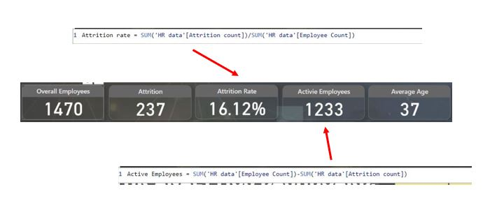

-
KPI Design.
-
Department wise attrition.
-
Number of employee by age group.
-
Job satisfaction ratings..
-
Education field wise attrition.
-
Attrition rate by gender for different age group.
1 st KPI is overall employees(sum of the total employees.) .
2 nd KPI Attrition(the sum of the total attrition.).
3 rd KPI is Attrition Rate.(the attrition in this organization , calculated by dividing the attrition count by the total employee count.) we create a new measure here.
4 th KPI is active employees.(calculated by substracting attrition count by total employees.) we create a new measure here.
5 th KPI is average age.
Create a pie chart that display the distribution of attrition count across different Department. This chart will help us identify any patterns or fluctuations in attrition on a department basis.
Create a bar chart that illustrates the sum of employee count over a specific age band. This chart help us identify any patterns in employee count on a age basis and wise gender.
Create a Table that shows the distibution of sum of employee count with job role(rows) and job satisfaction(column) .
Create a stacked bar chart that represents the sum of attrition to different education field. This chart will help us understand attrition for education.
Create donut charts that persents the sum of attrition cross different age band with gender. Thses charts will allow us to compare the sum of attrition of different age band with gender.